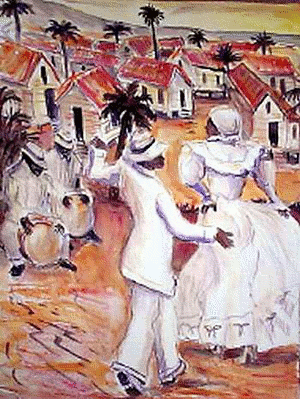
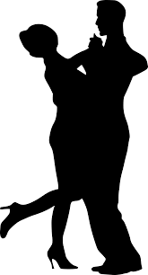
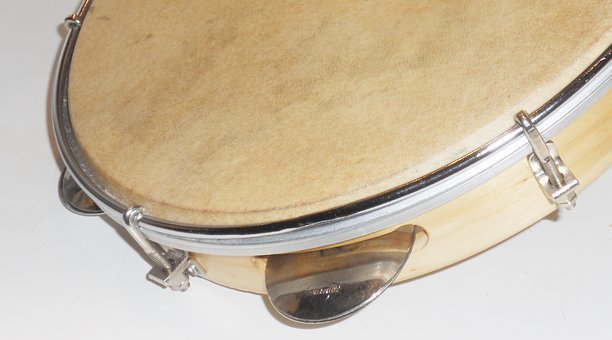
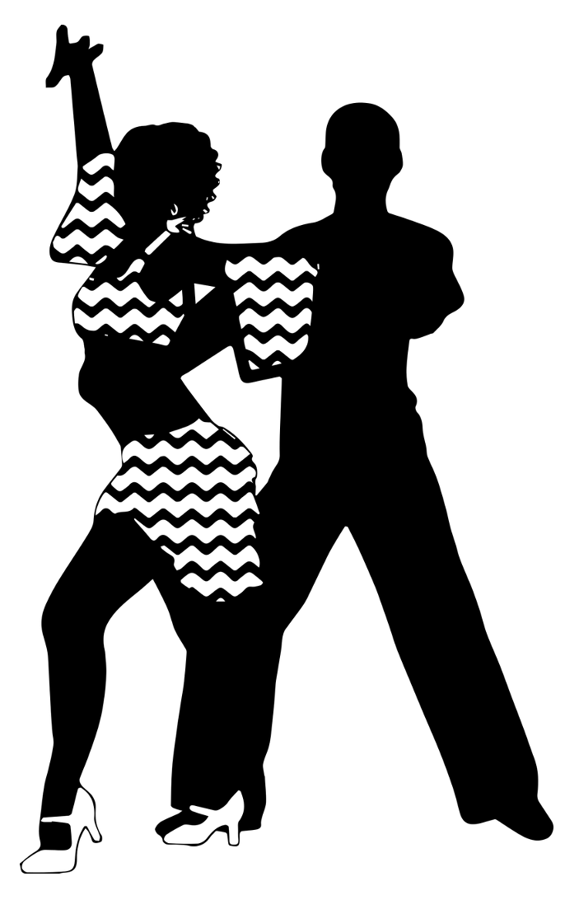

Música Puertorriqueña
En Puerto Rico, la música siempre ha sido la expresión máxima de la cultura. Desde el Areyto de nuestros indios Taínos, todos los grupos que conforman el pueblo de Puerto Rico han aportado a lo que conocemos hoy día como la música puertorriqueña.
Aquí se encuentran los géneros principales que forman parte de la musicalidad puertorriqueña:
- La bomba
- Música Jíbara
- La danza
- La plena
- La salsa
Bomba
La bomba es un género musical que se creó en Puerto Rico, principalmente en zonas costeras donde hubo mayor concentración de esclavos. Los pueblos de Mayagüez, Santurce, Loíza, Ponce, Güayama, Santa Isabel, Juana Díaz, entre otros, fueron la cuna de los varios estilos que conforman la bomba puertorriqueña. A pesar de que estos diversos estilos se agrupan por estas regiones geográficas, en todo Puerto Rico pueden encontrarse unas características generales en la bomba. La misma se toca con dos o más tambores llamados barriles. También, se utiliza una maraca que la toca un cantaor y unos palitos, llamados cuá, que se tocan contra el costado de uno de los barriles o contra una bambua. La bomba se define como un duelo entre el bailador y el tocador del tambor denominado como subidor o primo y que va marcando los golpes que el bailador hace.
Música Jíbara

Nuestra música campesina es definitivamente una de las más ricas que tenga cualquier país en terminos melódicos, armónicos y rítmicos. Hay una gran variedad de estilos musicales que se desarrollaron en el campo, pero son los Seises y Aguinaldos los estilos principales de nuestra música jíbara. Dentro de los estilos que se consideran Seises hay mas de 100 vertientes. De la msima manera, hay aproximadamente una veintena de tipos de Aguinaldos con la misma diversidad que se da en los Seises. Los instrumentos esenciales en estos géneros musicales son: el cuatro puertorriqueño, la guitarra, el güiro (de herencia Taína) y hoy día el bongó se utiliza para añadir énfasis rítmico. También, se utilizan instrumentos de la familia de la guitarra y el cuatro conocidos como bordonúa (tiene la función del bajo) y el tiple (soprano o voz aguda). A esta combinación no le puede faltar uno de sus elementos más importantes, el trovador. Este cantante típico improvisa su poesía al momento, siguiendo fielmente la estructura de la décima espinela. Desde España nos llega este estilo poético el cual se utiliza para cantar a través de toda Hispanoamérica, pero es en Puerto Rico donde más estilos musicales existen para improvisarlo y cantarlo. Es también en Puerto Rico donde se adapta su estructura, originalmente de versos octosílabos (8 sílabas), a versos hexasílabos (6) para ser cantada en los Aguinaldos.
Danza
La Danza puertorriqueña es probablemente el género criollo de mayor influencia europea ya que es descendiente directo de la contradanza y otros bailes de salón que trajeron los españoles. Sin embargo, también hay una clara influencia de la música proveniente de África en el ritmo de la Danza, lo que demuestra la fusión cultural que destaca a Puerto Rico. La Danza tiene una forma estructurada la cual comienza con un paseo donde las parejas se pasean alrededor de la pista de baile hasta que comienza el merengue o la parte mas rítmica de la Danza. Fue este baile prohibido por el gobernador español Don Juan de la Pezuela por considerarlo vulgar ya que las parejas bailan muy cerca. Las Danzas pueden clasificarse en dos estilos: festiva como lo son "No me toques" y "Sara", o romántica como lo son “Margarita”, “Idilio” y “Mis Amores”. El estilo que más se conoce y en el que se escribe la mayor cantidad de Danzas es el romántico.
Plena
Se dice que la Plena tuvo origen en el barrio de la Joya del Castillo en Ponce y que su creador fue Joselino “Bum Bum” Openheimer. Sea esto cierto o no, es material de discusión. Lo que no es discutible es que fue en en esa ciudad sureña que la Plena tuvo su desarrollo estilístico. Inicialmente la Plena se cantaba para relatar los sucesos acontecidos durante el día o en la semana. Se dice que es el periódico cantado y ya que que muchos personas no sabían leer, se enteraban de noticias por este modo. Algunos ejemplos de Plenas son:“Cortaron a Elena”, “Tintorera del Mar”, “Temporal” y “El Obispo”. Para tocar la Plena se utilizan tres panderos o panderetas. El ritmo básico lo marca el pandero más grande llamado seguidor, el pandero mediano hace un ritmo complementario y se conoce como punteador y el requinto, que es el pandero más pequeño, improvisa sobre esa base. Además, se utiliza el güiro para mantener el tiempo. La Plena puede utilizar también el acordeón o la guitarra para su acompañamiento armónico y como relleno melódico se utiliza el clarinete, la trompeta y el trombón.
Salsa
Es importante mencionar que la Salsa no es un ritmo o un estilo musical, sino que es un un nombre genérico que se le dio a varios estilos latinoamericanos que poco a poco se han ido fusionando y han ido forjando este género que incluye varios ritmos. El mismo es un fenómeno de mediados del siglo XX, que surgió cuando muchos trabajadores puertorriqueños emigraron a las grandes ciudades de Estados Unidos. Allí, junto con músicos de otras nacionalidades, fusionaron los ritmos que trajeron de sus respectivos países de origen. Rítmicamente, la Salsa es en principio cubana ya que los estilos del: son, guaracha, mambo, rumba, entre otros, son los que le dan base a la salsa boricua.
Referencia
https://artesdelcaribe.com/los-estilos-musicales-folkloricos-de-puerto-rico/